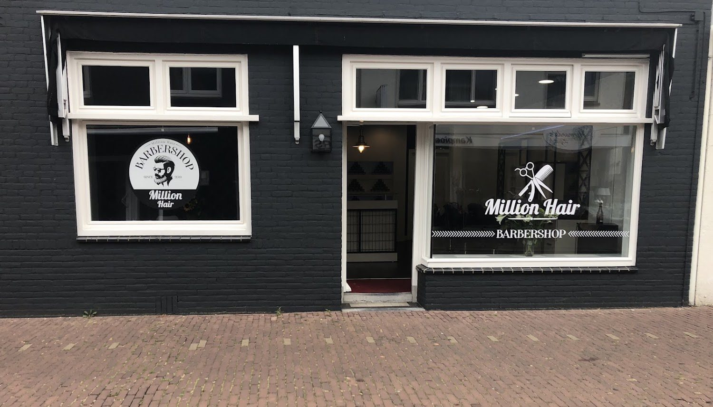
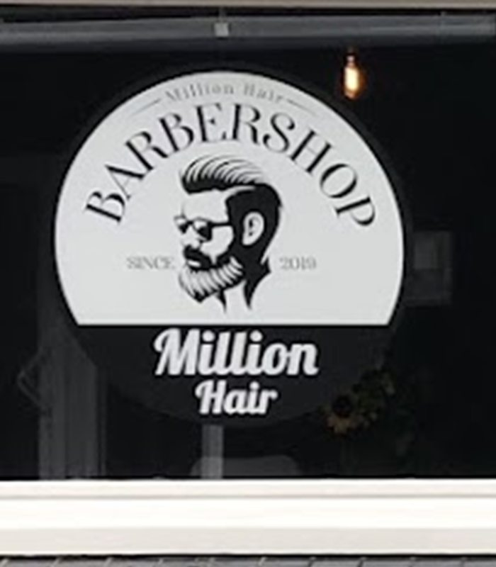

Ook op zondaggewoon open.
Barbershop in het centrum van Zevenaar. Zeven dagen per week, doordeweeks tot acht uur 's avonds.
Wat het kost
Geen verrassingen achteraf. Dit zijn de tarieven, en daar komt niets bij.
Knippen
20 minutenKnippen en baard
30 minutenDe enige die zondag knipt.
Doordeweeks geen tijd? Op zondag zit u hier van tien tot vijf gewoon in de stoel. En doordeweeks kunt u tot acht uur 's avonds terecht, dus ook na het werk.
- Maandag12:00 - 19:00
- Dinsdag09:30 - 19:00
- Woensdag09:30 - 20:00avond
- Donderdag09:30 - 20:00avond
- Vrijdag09:00 - 20:00avond
- Zaterdag09:00 - 17:00
- Zondag10:00 - 17:00open

Bij Onur in de stoel
Eén kapper, geen wisselende gezichten. U legt een keer uit hoe u het wilt en daarna weet hij het. Dat is waarom mensen hier jaren blijven komen.
Ik heb bij veel kappers gezeten maar na telkens wisselen ben ik bij Onur terecht gekomen. Hij knipt als de beste en de prijs is relatief goedkoop.
Finn Peters
Goede kapper, aardige vent en goede service.
Marc Tomassen
Al jaren zeer tevreden.
Bentley
Een plekje vastleggen
Kies hieronder een behandeling en een tijd die u schikt. U boekt rechtstreeks in de agenda van de zaak.
Liever even overleggen?
Stuur een appje, meestal krijgt u binnen een paar minuten antwoord. Binnenlopen mag ook, maar dan kan het zijn dat u even wacht.